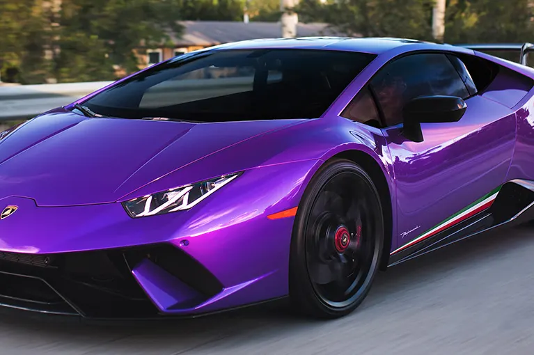
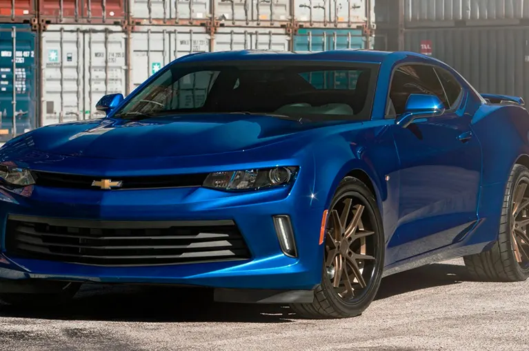
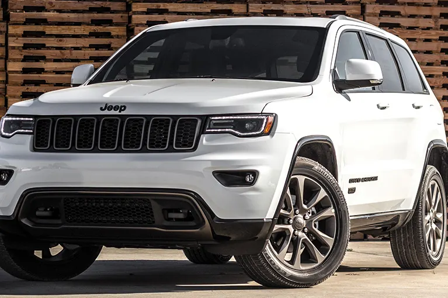

XPEL PRIME ceramic, high-performance window film for your car, SUV or fleet. A cooler cabin, over 99% UV protection and zero interference with your GPS or phone.
✦ A cooler cabin — Ceramic lines filter infrared radiation, the part of sunlight that heats seats, steering wheel and dashboard. Your A/C cools faster and works less.
✦ Over 99% UV protection — Up to SPF 1000 on XR PLUS and XR: protects your skin on long drives and keeps upholstery, leather and dashboard from drying out or fading.
✦ Less glare — Cuts sun and road glare and eye fatigue when driving the Hotel Zone or the highway to Tulum.
✦ Privacy and security — Your belongings stay out of sight when you park at the beach, the store or the office.
✦ Crystal-clear signal — No interference with GPS, cell, radio or Bluetooth, something cheap metallized tints can't promise.
✦ Never turns purple — PRIME films are color-stable: they don't fade or turn violet in the sun like low-quality dyed tints.
XPEL PRIME window film lines
We install all four XPEL automotive lines so you get exactly what you need: maximum comfort, the best value, or simply privacy with stable color.

Multi-layer ceramic · SPF 1000
XPEL PRIME XR PLUS
The top of the range. Multi-layer ceramic nanoparticles deliver XPEL's highest heat rejection, even in light shades that keep visibility high. For drivers who spend hours in the car or simply want the best.
Nano-ceramic · SPF 1000
XPEL PRIME XR
First-class ceramic performance at a more accessible price. Filters infrared far better than dyed or metallized film and keeps its clarity and color for years.

Hybrid dye-metal
XPEL PRIME HP
Better heat rejection than traditional dyed tint, with a slightly reflective finish that matches factory privacy glass. Formulated not to interfere with signals. The sweet spot between value and performance.

Non-metal dyed · SPF 500
XPEL PRIME CS
The entry option with XPEL quality: privacy, less glare and UV protection in carbon black or neutral that never turns purple. Ideal for fleets and daily drivers.
XPEL PRIME lines at a glance
Line
Technology
Heat rejection
UV protection
Signal-safe
XR PLUS
Multi-layer ceramic
Maximum
SPF 1000 · 99%+
Yes
XR
Nano-ceramic
Very high
SPF 1000 · 99%+
Yes
HP
Hybrid dye-metal
Medium-high
99%+
Yes
CS
Non-metal dyed
Standard
SPF 500 · 99%+
Yes
Genuine XPEL film with a lifetime transferable manufacturer warranty (subject to XPEL terms and registration). We register your installation at delivery.
Which tint shade should you choose?
Shade is measured by visible light transmission (VLT): the lower the number, the darker the glass. With ceramic film you no longer need a very dark tint to keep your car cool.
Light
Barely changes the look of the car. With XR PLUS or XR it still rejects heat and UV while keeping the best night visibility.
Medium
The most requested balance: daytime privacy, a sleek look and good visibility when driving at night.
Dark
Maximum privacy, recommended mainly for rear side windows and rear glass on SUVs and work vehicles.
We advise on the shade for each window according to current traffic regulations; the front windshield is reviewed case by case.
How we install your window tint
1. Advice and quote — Tell us make, model and year; we recommend a line and shade for your use and budget.
2. Preparation — We inspect the glass, remove any old tint and deep-clean to avoid bubbles or dust.
3. Custom cut — We cut the film to the exact shape of each window on your model and heat-shrink it on curved glass.
4. Installation and inspection — We apply, seal the edges and check every window against the light before delivery.
5. Curing and warranty — We give you care instructions for the first days (keep windows up while it cures) and register your XPEL warranty.
Window tint for fleets and businesses
If your company already brands its vehicles with us, adding XPEL tint in the same visit saves downtime: one appointment, one invoice and a finished fleet image.
✦ More comfortable drivers — Less heat and glare during full shifts under the Caribbean sun.
✦ Cargo kept out of sight — Goods and tools are less visible from outside.
✦ Wraps + tint — We coordinate both jobs; see our vehicle wraps.
What is the difference between ceramic and dyed window tint?
Dyed film (like XPEL PRIME CS) darkens the glass and blocks UV but rejects less heat. Ceramic film (PRIME XR and XR PLUS) uses nanoparticles that filter infrared radiation, the part of sunlight that heats the cabin, so it keeps the car cooler even in light shades. Under the Cancun sun, ceramic is the one you really feel.
Does XPEL tint interfere with GPS, cell phones or Bluetooth?
No. XR PLUS, XR and CS contain no metal, and PRIME HP is formulated not to interfere with radio, cellular or Bluetooth signals, according to XPEL specifications.
How long does a window tint installation take?
A full car is usually delivered the same day; large SUVs and fleets are scheduled per vehicle. After installation, keep the windows up for a few days while the film cures; we give you written care instructions at delivery.
What warranty does XPEL window film have?
XPEL backs its PRIME films with a lifetime transferable manufacturer warranty, subject to XPEL terms and registration. As a dealer and installer, we register your installation so the warranty is in your name.
How dark can I tint my car?
Each XPEL line comes in several shades, from very light to dark. We recommend a shade based on privacy, night visibility and current traffic regulations. The front windshield has more restrictions than side windows and the rear glass, so we review it case by case.
Do you tint fleets and company vehicles?
Yes. We tint delivery fleets, service vans and executive vehicles, and can combine it with vehicle wraps and branding in a single shop visit.
Can you remove old tint before installing XPEL?
Yes. We remove the old film and adhesive residue before installing, taking care of the rear defroster lines. Removal is quoted separately depending on the condition of the old film.
Ready to tint your car with XPEL?
Send us your make, model and year and we'll quote within 24 hours. We serve Cancun and the Riviera Maya.